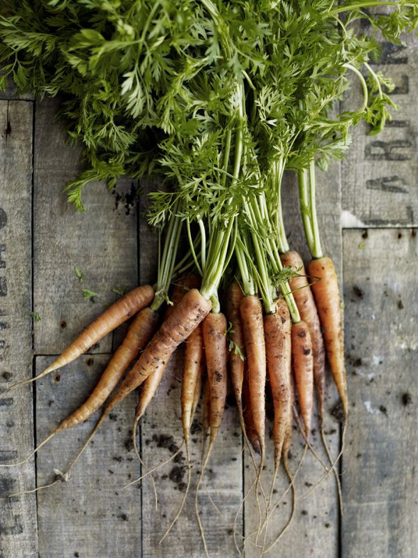
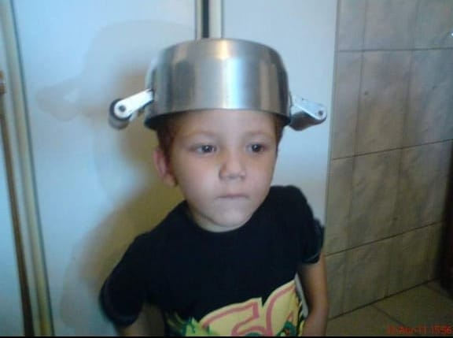

NOSSA HISTÓRIA
A família Pascoalini tinha uma plantação de cenoura e uma tradição, quando a mãe está grávida e come muita cenoura o filho nasce ruivo. Assim nasceu um menininho ruivo muito apegado a avó, uma vendedora de bolos, assim ele desenvolveu um amor por bolos e seguiu os passos de sua avó e começou suas vendas de bolos de cenoura com chocolate


FORNECEDORES
Família Pascoalini
Nestle